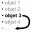
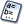

En algunos casos es necesario modificar el orden en el cual fueron creados los objetos de una figura.
Tomemos un ejemplo:
Supongamos que creamos dos puntos libres O y A en negro luego creamos la circunferencia de centro O que pasa por A.
Activamos a continuación el color rojo, elejimos el estilo de relleno pleno , cliqueamos sobre el ícono  de creación de superficie delimitada por una circunferencia, polígono o lugar de puntos.
de creación de superficie delimitada por una circunferencia, polígono o lugar de puntos.
La superficie que aparece recubre entonces una porción de su recta.
Utilice entonces el icono

de reclasificación al final de la lista de objetos gráficos (que aparece haciendo clic sobre el icono a la derecha de la barra de herramientas superior), luego haga clic sobre la recta.La parte oculta reaparece.
Haga clic en el icono (Protocolo de la figura).
Verá ahora que la recta es el último objeto en la lista de objetos creados.
Por lo tanto es posible reclasificar :
 o ).
o ).
o la herramienta de protocolo .El icono de protocolo de la figura también permite reclasificar de manera más de cerca los objetos entre ellos, usando las flechas a la derecha.
En la caja de diálogo de protocolo :
Para reclasificar un objeto lo más posible hacia el principio de la lista de los objetos creados: seleccione este objeto en la lista y luego haga clic en el icono  .
.
Para reclasificar un objeto lo más posible hacia el final de la lista de los objetos creados : seleccione este objeto en la lista y luego haga clic en el icono  .
.
Para reclasificar un objeto un paso hacia el principio de la lista de los objetos creados : seleccione este objeto en la lista y luego haga clic en el icono  .
.
Para reclasificar un objeto un paso hacia el final de la lista de objetos creados : seleccione este objeto en la lista y luego haga clic en el icono  .
.
Para reclasificar un objeto con relación a otro :
reclasificará el objeto2 delante del objeto1. reclasificará el objeto 1 después del objeto 2.Observaciones :
La reclasificación de un objeto provoca la reclasificación de otros objetos de los que de él dependen.
En algunos casos, se rechazará una reclasificación porque es imposible.